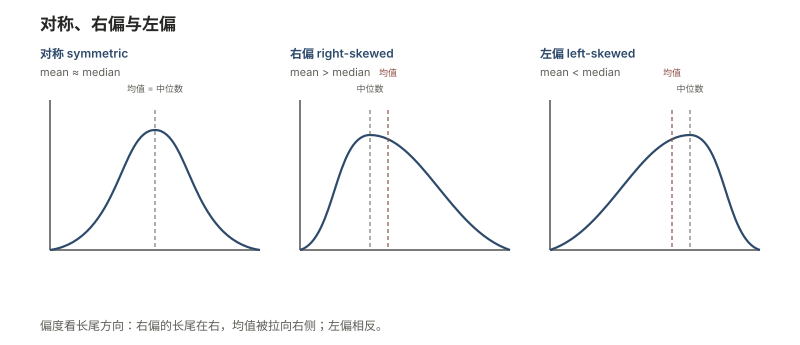

MTH113 · 第 1 章
数据基础、可视化与描述统计
Basics of Data, Visualization & Description
虚线下划线为术语；悬停查看中文、英文与释义，完整词典见“术语”。
本章目录
本讲回答一个核心问题：如何把原始数据变成清晰、诚实、有用的信息。主线是“识别总体与样本 → 判断变量类型 → 选择图表 → 用形状、中心、离散程度与异常值四个维度描述分布 → 写出有上下文的结论”。
本章要点
- 统计学是在变异存在的前提下从数据中学习的科学；平均相同的两组数据可以有完全不同的离散程度。
- 总体、样本、变量、参数与统计量是描述数据来源的五个基本词，参数固定但未知，统计量随样本而变。
- 变量先分分类与数值，数值再分离散与连续；编号、邮编、学号是标签，不是可平均的量。
- 频数表、条形图、点图、直方图、茎叶图与箱线图各有适用场合，条形图的柱要分开，直方图的柱要相接。
- 描述数值分布看形状、中心、离散程度与异常值；右偏时中位数比均值更稳健。
- 样本方差除以 n − 1，自由度概念由此而来；四分位距 IQR 与 1.5 IQR 围栏用于识别异常值。
- z 分数把不同尺度的观测值放到同一把“标准差尺子”上比较。
- 描述统计只总结已观测数据，推断统计才用样本对总体下结论；相关不等于因果。
1.1 统计学、变异与数据分析流程
统计学statistics被讲义定义为“在存在变异的前提下从数据中学习的科学”。变异variability指观测值并不完全相同。数据很少自己说话，我们需要方法来概括与解释它们，并判断哪些模式是真实的、哪些只是噪声。
讲义用两个班级说明变异的地位：两个班平均分都是 70，一个班分数紧贴 70，另一个班从 30 到 100。平均值相同，故事完全不同。因此只看一个中心指标不足以描述数据。
数据分析流程分四步，并可回到起点反复修正：提出清楚的问题（ask a clear question）→ 收集或获取数据（collect or obtain data）→ 概括与可视化（summarize and visualize）→ 解释与沟通（interpret and communicate）。好的统计分析不只做计算，它从情境出发、以清楚的信息结束。
W1 p.8–9
1.2 总体、样本、变量、参数与统计量
四个基础词要先分清。总体population是我们想了解的全部个体或集合；样本sample是实际被观测到的总体子集；变量variable是每个个体或单位被记录下来的特征。
讲义例子：某大学从 15,000 名学生中调查 200 人是否支持改评分制度。总体是全部 15,000 名学生，样本是这 200 人，变量是对拟议评分制度的态度。
再进一步要区分参数与统计量。参数parameter是对整个总体的数值概括，通常未知，例如全校学生真实平均分；统计量statistic是由样本算出的数值概括，例如 80 名被抽中学生的平均分。推断统计后来做的事，就是用样本统计量估计总体参数。
数据矩阵的读法也要建立：每一行是一个个体或观测单位，每一列是一个变量。计算之前先确认每个变量的含义与测量方式。
W1 p.10、33–35
1.3 变量类型：分类、离散数值与连续数值
变量分类决定后面能画什么图、能算什么数。讲义分三类：
- 分类变量categorical variable：取值是标签或组别，算术通常没有意义。例：品牌、性别、专业、等级类别、是/否回答。
- 离散数值变量discrete numerical variable：可数的数值，常为整数。例：学生人数、缺陷数、购买次数。
- 连续数值变量continuous numerical variable：在某个区间内可取任意值。例：体重、身高、时间、温度、价格。
讲义特别提醒：数字不一定是数值数据。学生学号、邮编是标签，不是可以求平均的数量。另有一类有序分类变量ordinal categorical variable，如满意度“差、一般、好、很好”，类别之间有顺序，但类别之间的差不一定数值相等。
| 变量 | 类型 |
|---|---|
| 血型 | 分类 |
| 今天收到的邮件数 | 离散数值 |
| 完成在线测验的时间 | 连续数值 |
| 大学生学号 | 分类标签 |
| 满意度：差 / 一般 / 好 / 很好 | 有序分类 |
| 一批货中的次品数 | 离散数值 |
| 电池寿命（小时） | 连续数值 |
W1 p.11、38
1.4 频数表、相对频数与累积相对频数
频数frequency是某一类或某一组的观测个数；相对频数relative frequency是频数除以观测总数。讲义用 20 个学生的期中成绩做贯穿例子，分组后：50–59 分 2 人（0.10），60–69 分 5 人（0.25），70–79 分 4 人（0.20），80–89 分 7 人（0.35），90–99 分 2 人（0.10），合计 20 人、相对频数合计 1.00。
由原始数据做数值频数表的步骤：找最小值与最大值 → 选一个合理的组数 → 建立互不重叠、覆盖整个范围的区间 → 数每组的观测数 → 除以样本量得相对频数。组数的一个常用起点是约 √n 组，但讲义强调情境与可读性比规则更重要。
累积相对频数cumulative relative frequency把相对频数逐组累加。讲义例子中累加到 70–79 组为 0.55，意思是约 55% 的成绩低于 80 分。累积相对频数是后面经验分布与分位数概念的雏形。
W1 p.13、39–40
1.5 单变量图示：条形图、点图、直方图、茎叶图与箱线图
讲义按数据类型给出图示选择。一个分类变量：频数表、条形图bar chart、饼图，评论最大/最小类别与比例。一个数值变量且样本较小：点图dotplot或茎叶图stem-and-leaf display，可看到聚类、间隙、具体数值与异常值。一个数值变量且样本较大：直方图histogram或箱线图，评论形状、中心、离散程度与异常值。两个数值变量：散点图，评论方向、形式、强度与异常点。
条形图与直方图的区别是高频考点。条形图用于分类数据，柱之间要分开，因为类别是彼此独立的组，顺序可按字母、逻辑或频数排列；直方图用于按区间分组的数值数据，柱彼此相接，顺序沿数轴排列。讲义明确警告：不要用直方图画品牌、专业这类类别，也不要用分开的柱表示组区间。
点图对每个观测放一个点，适合小到中等数据集，因为个别数值仍然可见。茎叶图像直方图，但保留原始数值：讲义例子中键值“7 | 4 表示 74”。饼图表示一个整体的各部分，只在类别很少时可读，比较相近百分比（如 23%、25%、27%）时不如条形图。
Clean vector comparison of two chart types side by side: left a bar chart for categorical data with four clearly separated bars labelled Math, Finance, CS, Business and a count axis; right a histogram for numerical score intervals 50-59 to 90-99 with touching bars and a relative frequency axis. Flat 2D, thin 1.5 px strokes, muted slate blue and warm grey palette, white background, English labels only, no cartoon, no gradient, no shadow.
直方图也可能误导：组数太少会掩盖结构，组数太多会出现噪声式图案，组宽不等时必须用密度而不是原始频数作高度。直方图的视觉印象取决于分组选择，要检查主要结论是否稳定。
W1 p.14–17、25、41–44
1.6 分布的形状、中心、离散程度与异常值
描述一个数值分布，讲义要求四个维度：形状shape、中心center、离散程度spread与异常观测（unusual observations）。形状词汇包括：对称（symmetric，左右大致镜像）、右偏（right-skewed，长尾向右，少数特别大的值）、左偏（left-skewed，长尾向左，少数特别小的值）、单峰（unimodal，一个主峰）、双峰（bimodal，两个主峰，可能提示两个子群体）。异常值outlier是远离数据主体的观测。
讲义用送货时间分布做示范：形状右偏、长尾朝向较大的送货时间；中心大约在 20–39 分钟；范围约 10 到 69 分钟；60–69 分钟区间可能包含值得检查的延迟订单。好的统计写作要用一段话，而不是孤立地丢几个形容词。

绘图提示词
Clean vector row of three density curves on separate axes: symmetric unimodal curve, right-skewed curve with a long tail to the right, and left-skewed curve with a long tail to the left. Each panel labelled symmetric, right-skewed, left-skewed. Flat 2D, thin 1.5 px strokes, muted slate blue and warm grey palette, white background, English labels only, no cartoon, no gradient, no shadow.
双峰分布值得单独说明：两个峰可能意味着数据混合了两个子群体（例如两个班、两种机器），此时报告一个总体中心会掩盖结构。描述分布时若看到双峰，应先追问数据来源是否混杂。
W1 p.15、45–47
1.7 集中趋势：均值、中位数与众数
均值mean使用全部观测，公式为
均值是数据的平衡点，但对极端观测敏感。中位数median是排序后的中间值：n 为奇数取正中间一个，n 为偶数取中间两个的平均。它对极端观测稳健，适合偏态数据。众数mode是出现最频繁的值或类别，适用于分类数据，但可能不存在或不唯一。
20 个成绩的例子：总和 1495，均值 74.75；排序后第 10、11 个值为 74 与 77，中位数 75.5；74 出现两次，众数为 74。均值与中位数接近，说明这组数据没有被极端值严重影响。
讲义用两组数据说明敏感性：A 组 2, 3, 4, 5, 6，均值与中位数都是 4；B 组 2, 3, 4, 5, 100，均值 22.8，中位数仍是 4。均值被 100 拉走，中位数仍能描述中心。另一个例子把 3, 4, 5, 6, 7 中的 7 换成 27，均值从 5 变成 9。
选择规则：大致对称、无强异常值时均值与中位数都可接受且应接近；偏态数据或有极端异常值时用中位数；分类数据用众数或比例。报告时必须带单位与情境，不能只写“mean = 74.75”。
W1 p.18–20、48–50
1.8 离散程度：极差、四分位数、IQR、方差与标准差
极差range是最大值减最小值，简单但对极端值非常敏感。四分位数quartile把数据分成下上半：Q1 约第 25 百分位，Q3 约第 75 百分位。四分位距interquartile range（IQR）= Q3 − Q1，描述中间 50% 观测的跨度。
20 个成绩的排序结果为 52, 55, 63, 64, 67, 68, 69, 72, 74, 74, 77, 81, 82, 84, 85, 87, 88, 89, 91, 93。中位数是第 10、11 个值的平均 (74 + 77)/2 = 75.5。下半部分 10 个数为 52 到 74，Q1 取其中第 5、6 个值的平均 (67 + 68)/2 = 67.5；上半部分 Q3 取 (85 + 87)/2 = 86。于是 IQR = 86 − 67.5 = 18.5。
样本方差sample variance与样本标准差sample standard deviation为
xi − x̄ 是第 i 个观测相对样本均值的偏差；平方可防止正负偏差相互抵消；s 用原单位，比 s2 更好解释。这 20 个成绩的 s ≈ 11.87，意思是大多数成绩在均值 74.75 附近约 12 分内。
为什么除以 n − 1：偏差是相对同一条数据算出的样本均值度量的，平方偏差平均偏小；除以 n − 1 而不是 n 可纠正这一倾向。n − 1 称为样本方差的自由度degrees of freedom。小例子 4, 6, 8：均值 6，平方偏差 4, 0, 4，s2 = 8/2 = 4，s = 2。
W1 p.21–23、51–56
1.9 五数概括、箱线图与异常值围栏
五数概括five-number summary是最小值、Q1、中位数、Q3、最大值。20 个成绩的五个数是 52、67.5、75.5、86、93；极差 41，IQR 18.5，样本标准差 11.87。箱线图boxplot把五数概括画成箱体与须。
异常值经验规则：低于 Q1 − 1.5 IQR 或高于 Q3 + 1.5 IQR 的值可标为潜在异常值。对这批成绩，下围栏 = 67.5 − 1.5(18.5) = 39.75，上围栏 = 86 + 1.5(18.5) = 113.75，没有观测落在围栏外。
Clean vector horizontal boxplot with a labelled axis from 50 to 95: whisker at minimum 52, box from Q1 67.5 to Q3 86, median line at 75.5, whisker at maximum 93, and small tick labels for the five-number summary. Flat 2D, thin 1.5 px strokes, muted slate blue and warm grey palette, white background, English labels only, no cartoon, no gradient, no shadow.
箱线图适合并排比较两组：讲义例子中参加辅导组的均值 78、标准差 8，未参加组均值 70、标准差 14；前者中心更高，后者更分散。但描述性比较不能证明辅导导致分差。
W1 p.23–24、52–53、60
1.10 z 分数与相对位置
z 分数z-score定义为
它表示一个观测值距离均值多少个标准差。z 为正表示在均值之上，为负表示在均值之下。z 分数把不同尺度的测量放到同一把尺子上，便于跨变量比较相对位置。
成绩例子中 x = 93、x̄ = 74.75、s = 11.87，z ≈ 1.54，说明 93 分比均值高约 1.54 个标准差。若另一门课某学生 z = 1.54，则两门课中的相对位置相同，尽管原始分数完全不同。
z 分数也为后面的经验法则与正态标准化埋下伏笔：在近似正态的数据中，|z| 大于 2 或 3 的观测值得特别关注；但本讲只要求会算与会解释相对位置，不涉及正态概率。
W1 p.57
1.11 描述统计的写作、两组比较与常见错误
讲义给出描述性总结模板：对[情境]，[变量] 的分布是[形状]，中心约在[均值/中位数]，离散程度约[IQR/标准差/极差]，有/没有异常观测，这提示[实际解释]。示范：班级成绩分布中心约 75 分，样本标准差约 12 分，按 1.5 IQR 规则没有异常值，成绩最集中在 80–89 区间。
比较两组时，要同时报告中心与离散程度。讲义例子：参加辅导组均值 78、标准差 8，未参加组均值 70、标准差 14。前者中心更高，后者更分散。但讲义紧接着提醒：描述性比较不能自动证明辅导导致差异；出勤可能与动机、先前准备、时间安排等因素有关。描述统计能揭示相关association，因果结论需要更强的研究设计。
讲义列出五类常见错误：对学号、邮编等标签求平均；不检查偏态与异常值就报告均值；类别过多仍用饼图；直方图组宽不等却不考虑密度；把样本结果直接说成证明了总体的某件事。
W1 p.27、60–62
1.12 描述统计与推断统计
描述统计descriptive statistics概括并传达已观测数据中的信息：表格、图形、平均数、离散程度指标。本讲主要停留在这里。
推断统计inferential statistics用样本数据对更大的总体下结论：置信区间、假设检验、预测、不确定性陈述。它从后面几周开始系统展开，第 9 周的抽样分布与置信区间是核心工具。
两者的连接点是抽样：样本统计量随样本而变，这种抽样变异性sampling variability正是推断统计要量化的对象。第 1 周先把数据看清、把变量分类、把分布描述准确，后面的概率模型才有可靠的输入。
| 维度 | 描述统计 | 推断统计 |
|---|---|---|
| 对象 | 已观测的样本数据 | 由样本推向总体 |
| 典型工具 | 频数表、直方图、均值、标准差 | 置信区间、假设检验、预测 |
| 是否含不确定性 | 不显式量化抽样误差 | 以概率陈述不确定性 |
| 本课程位置 | 第 1 周 | 第 9 周起重点展开 |
W1 p.31、35